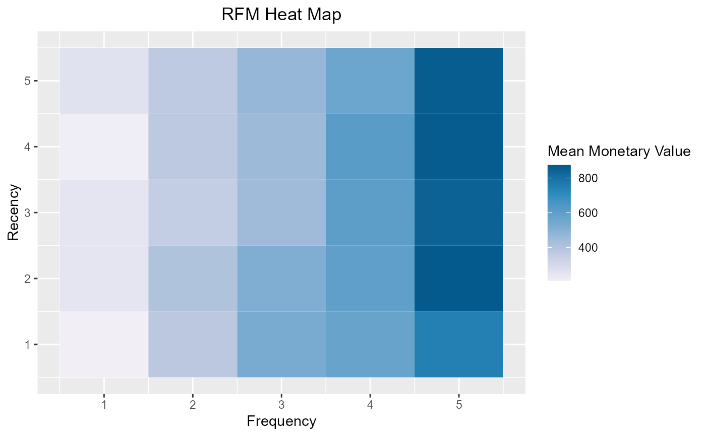
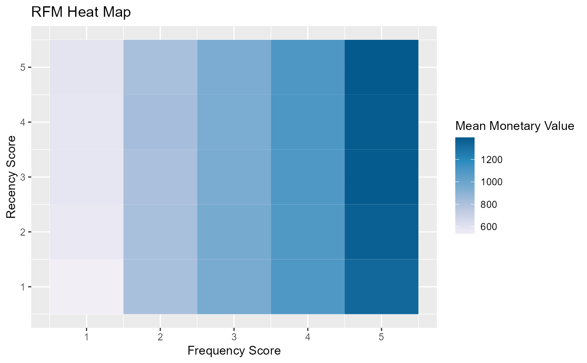

The heat map shows the average monetary value for different categories of recency and frequency scores. Higher scores of frequency and recency are characterized by higher average monetary value as indicated by the darker areas in the heatmap.
Usage
rfm_plot_heatmap(
data,
package = c("ggplot2", "plotly"),
brewer_n = 5,
brewer_name = "PuBu",
xaxis_label = NULL,
yaxis_label = NULL,
plot_title = NULL,
legend_title = NULL,
print_plot = TRUE
)Arguments
- data
An object of class
rfm_table.- package
Visualization engine. Choose between
ggplot2andplotly.- brewer_n
Indicates the number of colors in the palette; RColorBrewer is used for the color palette of the heatmap; check the documentation of
brewer.pal.- brewer_name
Palette name; check the documentation of
brewer.pal.- xaxis_label
X axis label.
- yaxis_label
Y axis label.
- plot_title
Title of the plot.
- legend_title
Legend title.
- print_plot
logical; if
TRUE, prints the plot else returns a plot object.
Deprecated Functions
rfm_heatmap() has been deprecated and will be made defunct. It has
been provided for compatibility with older versions only, and will be made
defunct at the next release.
Instead use the replacement function rfm_plot_heatmap().
Examples
# using transaction data
analysis_date <- as.Date('2006-12-31')
rfm_order <- rfm_table_order(rfm_data_orders, customer_id, order_date,
revenue, analysis_date)
# heat map
# ggplot2
rfm_plot_heatmap(rfm_order)

# plotly
rfm_plot_heatmap(rfm_order, "plotly")
# using customer data
analysis_date <- as.Date('2007-01-01')
rfm_customer <- rfm_table_customer(rfm_data_customer, customer_id,
number_of_orders, recency_days, revenue, analysis_date)
# heat map
rfm_plot_heatmap(rfm_customer)
